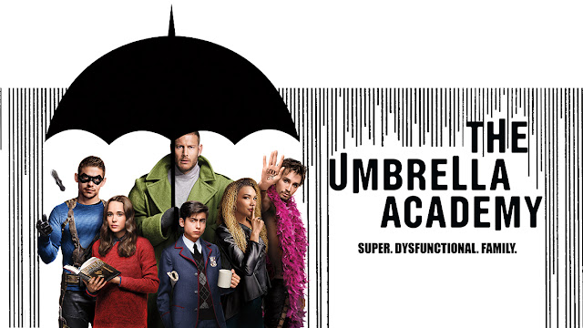

Академия Амбрелла
Описание:История начинается с экскурса в прошлое, когда в одно время в разных концах света у женщин, которые не были до этого дня беременны, родились дети. Всего их было сорок три, а выжило лишь семь, но все они обладали суперспособностями. Уцелевших детей усыновил богатый ученый по имени Реджинальд Харгрейвз, решивший взрастить их в своем особняке и подготовить к битве со злом. Со временем команда распалась, и в особняке остался лишь Реджинальд, его говорящая верная обезьяна-помощник Пого и робот, исполнявшая функции матери для обитателей дома. Так, вдали от детей, Реджинальд неожиданно умирает, что становится катализатором сбора давно развалившейся семьи. Теперь они должны выяснить, что стало причиной гибели их «отца» и предотвратить многие проблемы, которые угрожают всему человечеству.
Жанры: фантастика, комедия, драма